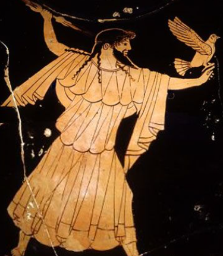
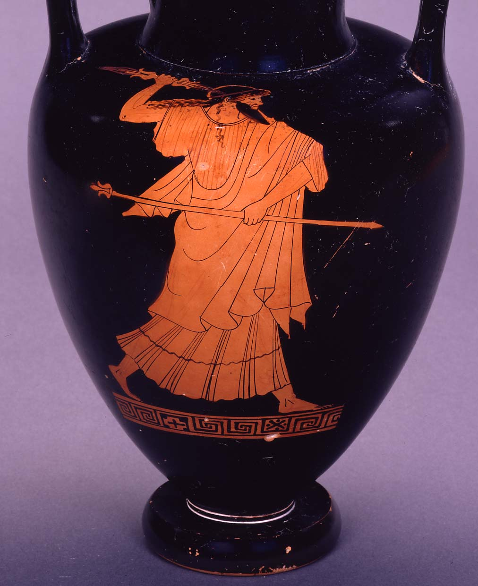
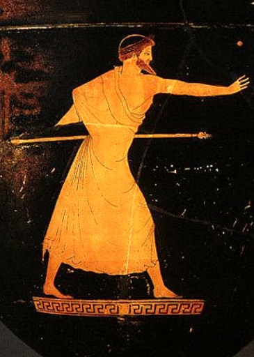

ORIGIN
Zeus is known by many as the King of the Gods, the god of the sky, weather, among others. He is often shown as a tall figure with a white beard and a toga. Zeus emerged as a pivotal figure in Greek mythology, overcoming the challenges posed by his father Kronos and establishing himself as the ruler of the the gods.
He was born as the sole son of Kronos and Rhea, as unfortunately his dad ate all of his brothers. Zeus was able to escape because his mother hid him in a Cretan cave. Later in his life, Zeus made a potion that forced his father Kronos to regurgitate all five of his former brothers.
While being raised on Mt. Dikte (on the island of Crete), Zeus was nutured with milk from Amalthea (a she-goat) and was raised by nymphs. He was protected by a warrior named Kouretes who once saved young Zeus by drowning out the sound of his crying with a battle-dance.
SYMBOLOGY
The main symbols that Zeus is recognized for is the thunderbolt, which he often wields in his hand. This weapon was forged by a Cyclops specifically for him, as a reward. While this is the most significant symbology attributed to Zeus, the eagle and the bull are also often used. Zeus is often seen with a crown of olives on top of his head.
Additionally, the aegis is a protective cloak or shield closely associated with Zeus. It often features the head of the Gorgon Medusa and is a symbol of divine protection. Athena, another deity in the Greek pantheon, is also commonly depicted with the aegis.
Finally, the oak tree is sacred to Zeus, and in some myths about his origin, he is said to have been born or concealed in a sacred oak grove. The oak represents strength, endurance, and the sacred nature of certain locations associated with the god.
POWERS
The main power that the Greeks believed Zeus possessed was control over the weather. Thus, he was often thought to be the god behind many powerful storms and torrential downpours that would strike Greece. It is said that Zeus would be quite vengeful when he felt forgotten about, creating droughts which would lead to famine in ancient Greece.
In addition to controlling weather phenomena, Zeus was immortal (as all Greek gods were), meaning he did not age once he reached maturity.
Finally, Zeus was known to be able to shapeshift in order to visit the mortal realm and walk around among them. This resulted in Zeus having multiple children with mortal women, resulting in multiple demigods. One of these demigods is Hercules, a well-known mythical representation of strength and willpower.
FAMILY
| Mother | Father | Notable Children |
| Rhea | Kronos | Hercules, Athena, Perseus, Apollo, Persephone |
{kind=link}